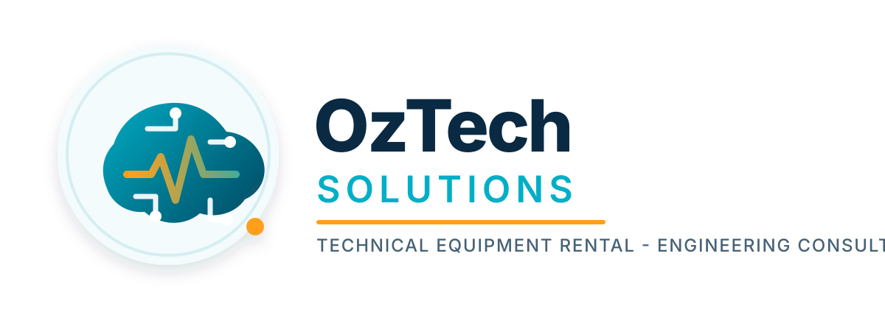

Equipment rental
Rent niche electronics and technical devices for short-term projects, trials, site investigations, and specialist field work.

Specialist technical electronics rental
OzTech Solutions supports mining, construction, and engineering teams with niche electronic equipment rental, ground scanning devices, and practical technical consultancy for field and site work.
What we do
Rent niche electronics and technical devices for short-term projects, trials, site investigations, and specialist field work.
Access ground scanning and locating equipment for construction, civil works, subsurface checks, and non-invasive site assessments.
Get practical engineering advice for equipment selection, measurement strategy, site setup, data collection, and technical troubleshooting.
Industries
From mine sites to construction zones, OzTech Solutions helps teams access equipment that can be difficult to justify purchasing for one-off or intermittent projects.
Technical electronics and field instrumentation rental for inspection, monitoring, testing, scanning, and engineering support in mining environments.
Ground scanning and locating devices for construction planning, civil works, concrete assessment, utility awareness, and site investigation support.
Consultancy and specialist equipment support for measurement, diagnostics, prototyping, validation, and technical problem solving.
Equipment areas
Availability can be matched to your project requirements, site conditions, and rental duration.
Share the site, objective, timing, and technical requirements.
Choose suitable rental equipment and supporting accessories.
Use engineering guidance to set up, measure, scan, and interpret confidently.
Contact
Tell us what you need to scan, test, measure, or investigate and we will help match the right equipment and support.